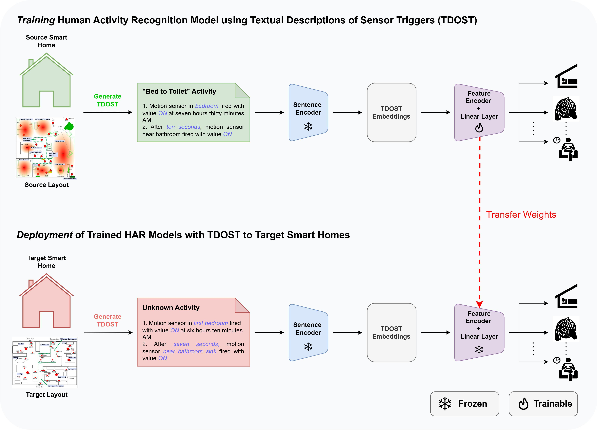
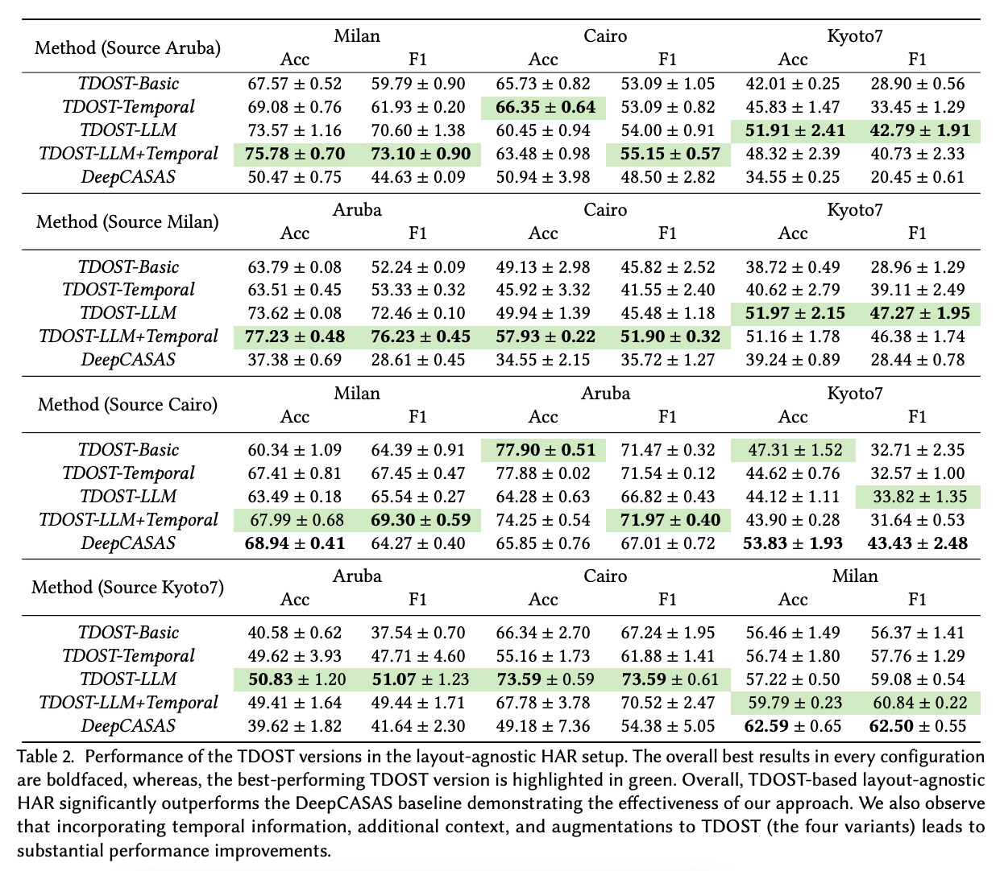

We introduce TDOST, a layout-agnostic modeling approach for HAR systems in smart homes that utilizes the transferrable representational capacity of natural language descriptions of raw sensor data. We generate Textual Descriptions Of Sensor Triggers that encapsulate the surrounding trigger conditions and provide cues for underlying activities to the activity recognition models. Leveraging textual embeddings, rather than raw sensor data, we create activity recognition systems that predict standard activities across homes without either (re-)training or adaptation on target homes.
TDOSTs are enriched with context that accompanies the raw sensor triggers, including the position of the sensor in the environment, its modality, and the time of the sensor trigger. They abstract away from the intricacies of the layout of a house and its sensor identifiers using natural language sentences, and can be efficiently encoded using pre-trained language models. The textual embedding space of web-scale text encoders then becomes the medium for transferring HAR models across home layouts without retraining on target layouts.
The approach tackles four challenges that arise when state-of-the-art HAR models are deployed in new smart-home conditions: (i) changes in sensor locations; (ii) different residents; (iii) data efficiency for model training; and (iv) label efficiency for target homes where no labeled or unlabeled data are collected. Our method only requires the floor plan of the target house and meta-information such as the quantity and types of sensors present, collected once and ingested automatically by the pipeline that converts raw sensor triggers into TDOSTs and feeds them to a deep classifier trained solely on labeled data from a source home.
Through extensive evaluation on benchmark CASAS smart-home datasets, the TDOST HAR model performs better or at par with state-of-the-art supervised baselines in the same source-home setting, establishing the recognition capabilities of the TDOST-trained activity classifier. More importantly, the layout-agnostic transfer setting, with no retraining and no adaptation on target homes, achieves superior recognition performance compared to state-of-the-art transfer procedures across the same source-target home pairs. A detailed component analysis examines how the individual pieces of the approach (sensor description content, language model choice, prompt construction) affect downstream activity recognition performance.

The TDOST pipeline was deployed live in the Georgia Tech Aware Home as part of the NSF AI CARING demo, taking the system out of simulation and into a real instrumented residence.
@article{thukral2025tdost,
title = {Layout-Agnostic Human Activity Recognition in Smart Homes through Textual Descriptions Of Sensor Triggers (TDOST)},
author = {Thukral, Megha and Dhekane, Sourish Gunesh and Hiremath, Shruthi K. and Haresamudram, Harish and Pl{\"o}tz, Thomas},
journal= {Proc. ACM IMWUT},
year = {2025},
doi = {10.1145/3712278}
}